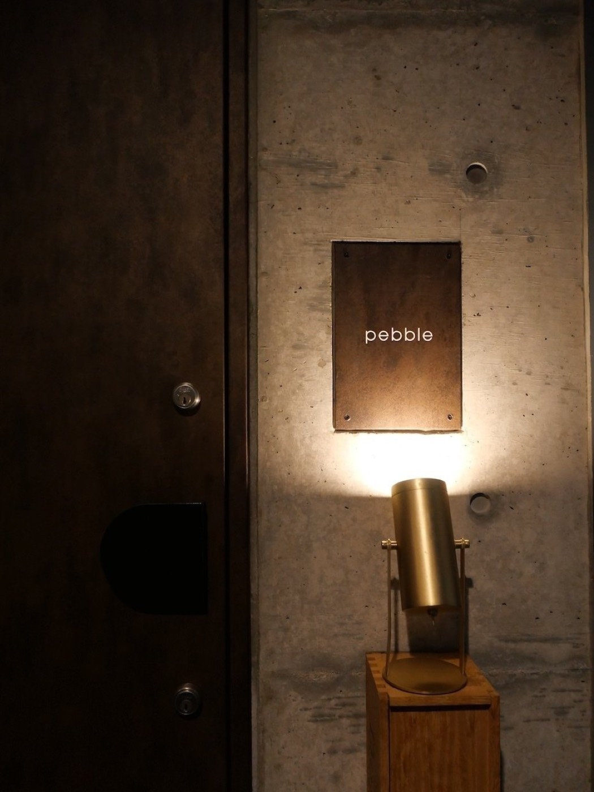
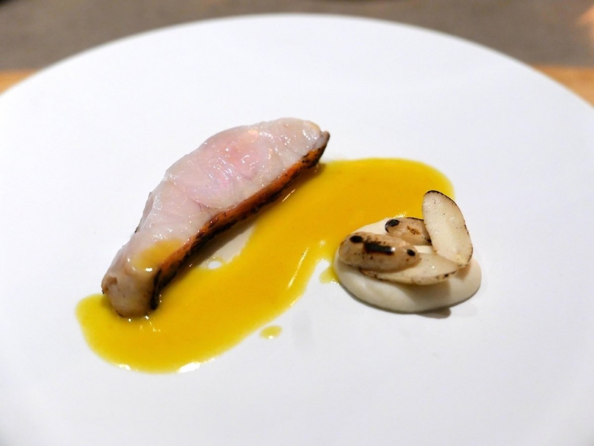
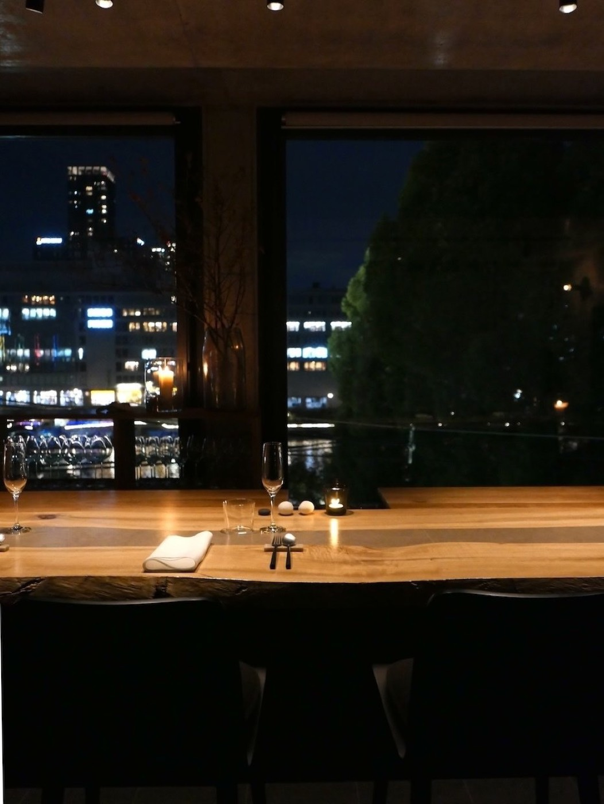
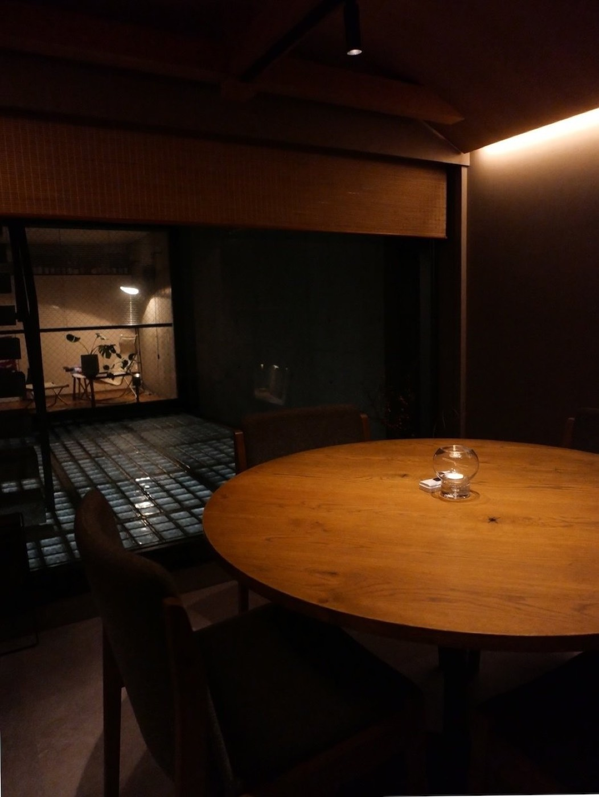

Osaka · Temmabashi
大川のほとり、十席のレストラン。
安藤忠雄建築の五階に、ワインと現代イタリアンの一皿を。
Concept
pebble ── 水辺の小石。2024年7月、天満橋のほとりに小さなワインバーとして生まれ、2025年、シェフ・夏川を迎えてレストランになりました。
場所は、安藤忠雄氏設計の建築の五階。かつて作家・堺屋太一氏が暮らした住まいの記憶を残す空間から、窓の外にはゆっくりと大川が流れます。

川に投げた小石の波紋のように、一皿とひと口のワインが、その日の記憶として静かに広がっていくこと。それがこの店の願いです。
Cuisine
イタリアンを基調に、季節の食材を現代的な手法で仕立てるコース料理。皿の上にも、小石がひとつ。

価格は税込・サービス料（7%）別。内容・価格は季節により変わります。最新のコースは Instagram にてお知らせしています。
Wine
オーナーソムリエが、国やスタイルにとらわれず世界の造り手から選ぶワイン。コースに合わせたペアリングで、皿ごとの対話をお楽しみください。
Space
打ち放しの静けさの中に、カウンター六席と、四名様までの個室をひとつ。大川を望む窓辺で、料理人とソムリエの手元を眺めながらの時間をお過ごしいただけます。


全席ご予約制です。おひとり様も歓迎いたします。
本日の一皿、抜いたばかりのコルク、窓の外をゆく季節。店の「いま」は、Instagramでお届けしています。ご来店の前に、のぞいてみてください。
Information
| 営業時間 | 月・火・木・土・祝 12:00–14:30 ／ 18:00–22:00 水・金 18:00–22:00 |
|---|---|
| 定休日 | 日曜日 |
| 住所 | 〒530-0043 大阪府大阪市北区天満3-1-2 TSビル 5F Google マップで開く → |
| アクセス | Osaka Metro 谷町線・京阪本線「天満橋」駅より徒歩約3分 |
| お電話 | 06-6356-0141 |
| お支払い | 各種クレジットカード（VISA / Master / JCB / AMEX / Diners） |
Reservation
十席の小さな店のため、ご予約のうえお越しください。以下の予約サイト、またはお電話にて承ります。